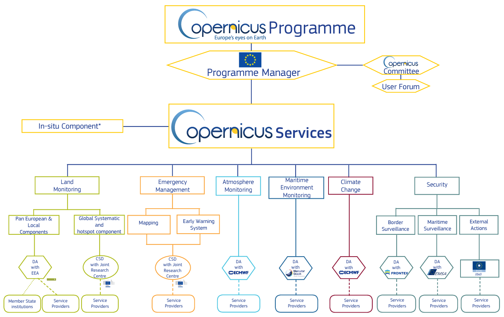

Imágenes de satélite
Una fuente muy importante de información en formato ráster son las imágenes de satélite.
Existen múltiples constelaciones que ponen a disposición de todos los usuarios imágenes de manera libre. Entre los programas más conocidos se encuentra el programa Copernicus. Copernicus es el Programa de Observación de la Tierra de la Unión Europea coordinado y gestionado por la Comisión Europea, en cuya ejecución colaboran los Estados miembros, la Agencia Espacial Europea (ESA), la Organización Europea para la Explotación de Satélites Meteorológicos (Eumetsat), el Centro Europeo de Previsiones Meteorológicas a Medio Plazo, las agencias de la UE y la empresa Mercator Océan.
Se utilizan enormes cantidades de datos globales procedentes de satélites y sistemas de medición terrestres, aéreos y marítimos para proporcionar información que ayude a los proveedores de servicios, las administraciones públicas y otras organizaciones internacionales a mejorar la calidad de vida de la ciudadanía europea. Los servicios de información proporcionados son de acceso gratuito y abierto para sus usuarios.
Su infraestructura está compuesta por 6 familias de satélites (misiones):
- Sentinel-1 proporciona imágenes de radar para todo clima, día y noche para servicios terrestres y oceánicos.
- Sentinel-2 proporciona imágenes ópticas de alta resolución para servicios terrestres.
- Sentinel-3 proporciona datos ópticos, de radar y altimétricos de alta precisión para servicios marinos y terrestres.
- Sentinel-4 proporciona datos para el seguimiento de la composición atmosférica.
- Sentinel-5 también se dedica al monitoreo de la composición atmosférica.
- Sentinel-5 P (Precursor) es una misión satelital de relleno de brechas que tiene como objetivo proporcionar continuidad de datos hasta el lanzamiento de Sentinel-5.
- Sentinel-6 proporciona altimetría de alta precisión para medir la altura global de la superficie del mar, principalmente para la oceanografía operativa y para estudios climáticos.

Fuente: https://www.copernicus.eu/es